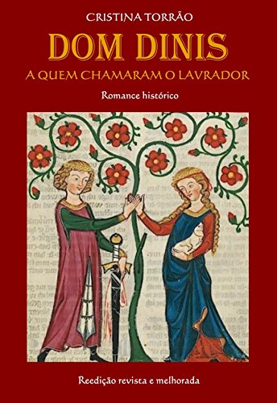
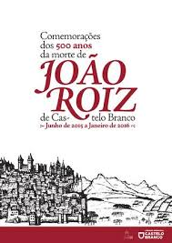

Amor Cortês
O Amor Cortês, também chamado de "amor trovadoresco", foi um conceito importante da literatura medieval e, posteriormente, da Renascença. Ele trata da relação idealizada entre um cavaleiro e uma dama, geralmente de classe social mais elevada, caracterizada pela devoção, pela admiração e pela nobreza de sentimentos, mas frequentemente distante e inatingível.
Principais características do Amor Cortês
1. Amor idealizado: O cavaleiro ou trovador expressa um amor puro e elevado, voltado mais para a devoção espiritual e moral do que para o desejo físico. O objeto de seu afeto é visto como perfeito, muitas vezes inatingível.
2. Submissão do amante: O amante, ou trovador, se coloca em uma posição de subordinação à dama, oferecendo sua lealdade e se dedicando a servir e agradar. A dama, por sua vez, frequentemente é vista como um ser superior, distante e intocável.
3. Obstáculos e sofrimento: O amor cortês é frequentemente marcado por barreiras que impedem sua realização plena, o que causa sofrimento ao amante. Esse sofrimento, no entanto, é visto como uma forma de crescimento moral e espiritual.
4. Influência religiosa: Muitas vezes, o amor cortês apresenta conotações espirituais, comparando o amor pela dama ao amor por Deus, e a devoção ao objeto amado pode ser vista como uma espécie de exercício de purificação.
Contexto histórico
O Amor Cortês surgiu na Idade Média, especialmente nas cortes aristocráticas da Provença, no sul da França, e influenciou profundamente a literatura europeia. Em Portugal, esse tema foi amplamente explorado pelos trovadores e poetas líricos medievais, e também ressoou em autores do Renascimento.
Obras e autores importantes
Dom Dinis: "A quem chamaram o lavrador"
João Roiz: "Junho de 2005 a Janeiro de 2016"
Conclusão
O Amor Cortês é um tema essencial na literatura medieval e renascentista, marcado pela idealização do amor e pelo papel central da devoção e da pureza. Ele moldou a maneira como as relações amorosas foram representadas em muitas das obras dos trovadores portugueses, influenciando gerações de poetas e literatos.
Embora distante das concepções modernas de amor, o Amor Cortês continua a ser uma parte importante do estudo da literatura portuguesa e europeia, oferecendo uma visão romântica e idealizada das relações humanas.